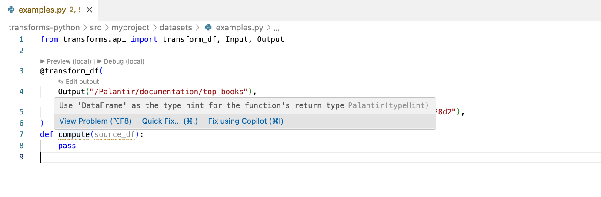
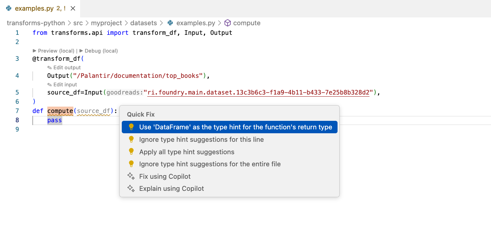
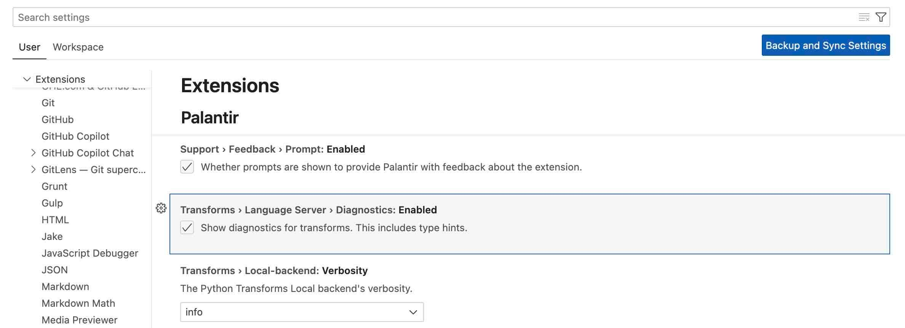

The Palantir extension for Visual Studio Code includes a linter to ensure the correct usage of transform parameter types in your Python code. This linter suggests code actions to add or update transform parameter type hints, ensuring that the Python language server provides accurate code completions.
The linter displays warnings for missing or incorrect type hints:

You can fix the warnings by selecting Quick Fix and choosing one of the suggested code actions:

The linter automatically inserts the required import statements and adds the correct type hints to the function parameters.
You can disable type hint suggestions globally in the settings, or use inline comments to instruct the linter to skip specific lines or files.
To disable type hints, go to Settings > Extensions > Palantir > Transforms > Language Server > Diagnostics, and uncheck the box. This is equivalent to adding "palantir.transforms.languageServer.diagnostics.enabled": false to your settings.json file.

You can disable type hint suggestions inline by using special comments. The linter supports the following comments:
| Comment | Behavior |
|---|---|
# palantir: ignore |
Ignores all type hints if placed at the beginning of the file; ignores type hints for the specific line if placed elsewhere |
# palantir: ignore-next-line |
Ignores type hints in the next line |
# type: ignore |
Ignores all type hints if placed at the beginning of the file; ignores type hints for the specific line if placed elsewhere |
# noqa |
Ignores type hints in the same line |